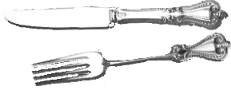

Explore Washington's world through food
 Just like you and me, over 200 years ago, George and Martha Washington worried what time dinner was and if there would be enough dessert. But, as colonial Virginians, they had to do it without a grocery store, a refrigerator, or a stove! Everything was done at their home—a plantation called Mount Vernon.
Just like you and me, over 200 years ago, George and Martha Washington worried what time dinner was and if there would be enough dessert. But, as colonial Virginians, they had to do it without a grocery store, a refrigerator, or a stove! Everything was done at their home—a plantation called Mount Vernon.
We can learn a lot about the Washingtons and other Virginians in the 18th century from the way they ate.
Food was important, not just for eating but for showing off your wealth, manners, and patriotism.
But getting food on the table was serious work. Hundreds of slaves at Mount Vernon grew and cooked the food that landed on Washington's table.